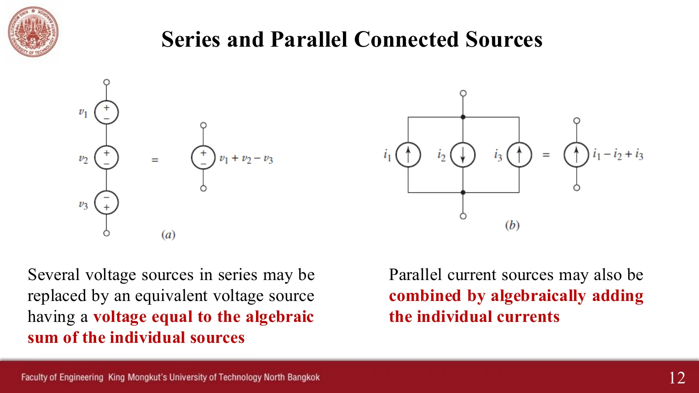
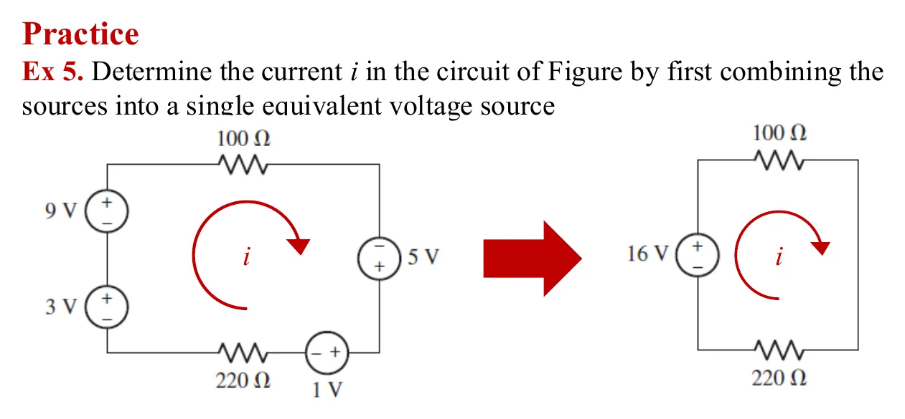
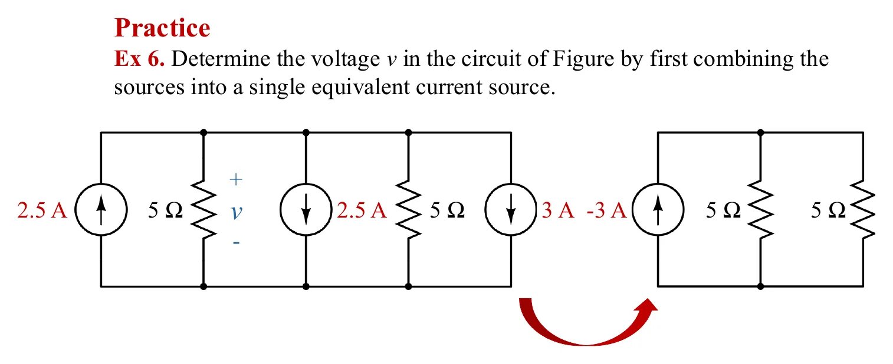
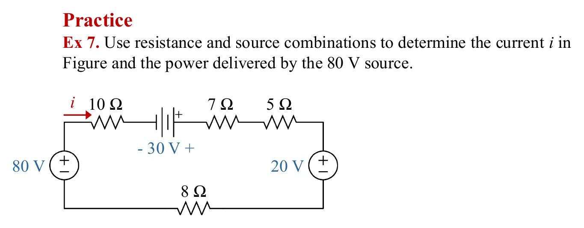
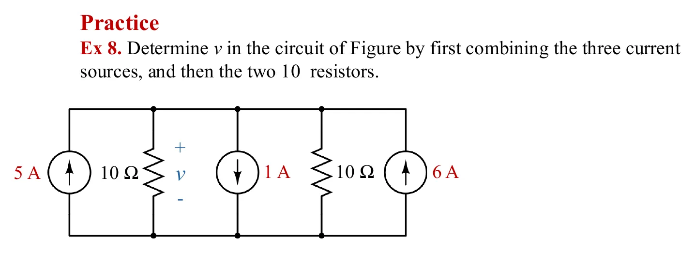
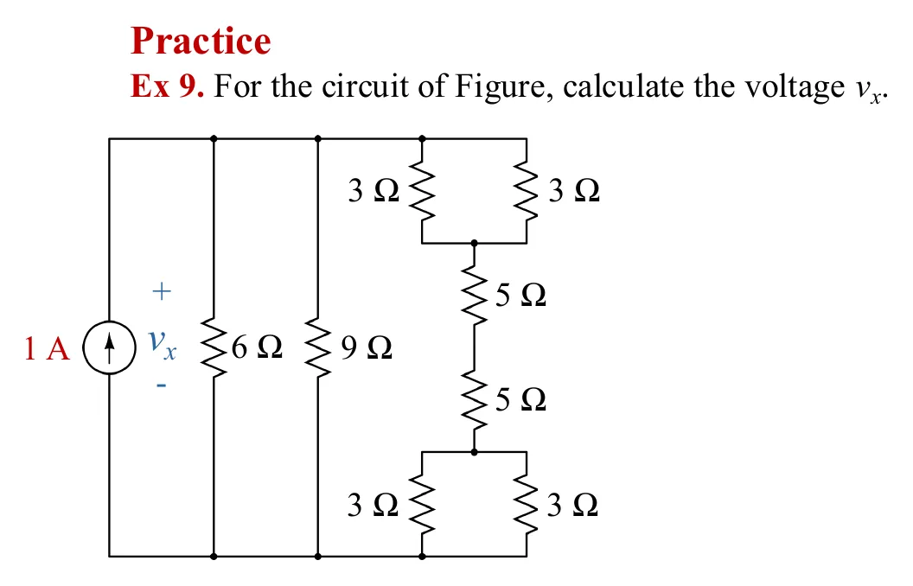

สไลด์หน้า 12: แหล่งจ่ายแรงดันที่ต่ออนุกรมกันรวมเป็นตัวเดียวได้ โดยบวกแรงดันแบบมีเครื่องหมาย และแหล่งจ่ายกระแสที่ต่อขนานกันก็รวมเป็นตัวเดียวได้ โดยบวกกระแสแบบมีเครื่องหมาย สไลด์หน้า 15 และ 17 ใช้หลักเดียวกันกับตัวต้านทาน อนุกรมให้บวกกัน ขนานให้บวกส่วนกลับ ทุกขั้นที่ยุบวงจร ค่าที่โจทย์ถามต้องเท่าเดิม ในภาพจำลอง กลุ่มที่จะรวมในขั้นถัดไปเรืองแสงสีเหลือง ตัวสมมูลที่เพิ่งได้เรืองแสงสีชมพู และกระแสจะเริ่มไหลเมื่อหาคำตอบได้ หน้านี้มี 5 โจทย์ เรียงทีละข้อ (Ex 5–9) และเครื่องมือหนึ่งชิ้นที่แสดงว่าทำไมห้ามต่อแหล่งจ่ายแรงดันค่าต่างกันขนานกัน
Slide p. 12: voltage sources in series can be replaced by one, adding their voltages with signs, and current sources in parallel can be replaced by one, adding their currents with signs. Slides pp. 15 and 17 do the same for resistors: in series they add, in parallel their reciprocals add. At every step of the reduction the asked value stays the same. In the simulations, the group to combine next glows yellow, the equivalent just formed glows pink, and the current starts to flow once the answer is found. This page has 5 problems, one after another (Ex 5–9) and one tool that shows why voltage sources of different values must not be put in parallel.





แหล่งจ่ายแรงดันในอุดมคติบังคับแรงดันคร่อมตัวเองให้คงที่ ถ้าแหล่งจ่าย 10 V ต่อขนานกับแหล่งจ่ายที่ไม่ใช่ 10 V แรงดันคร่อมคู่นั้นจะต้องเป็นสองค่าพร้อมกัน ซึ่งขัดกับ KVL ในวงจรจริงจึงเกิดกระแสวนขนาดใหญ่ระหว่างแหล่งจ่ายทั้งสอง (จำกัดด้วยความต้านทานภายในเท่านั้น) เลื่อน \(V_2\) ให้เท่ากับ 10 V แล้วกระแสวนจะหายไป
An ideal voltage source forces its own voltage. If a 10 V source is put in parallel with a source that is not 10 V, the pair would need two voltages at once, which breaks KVL. In a real circuit a large current circulates between the two sources, limited only by their internal resistance. Slide \(V_2\) to 10 V and the circulating current disappears.